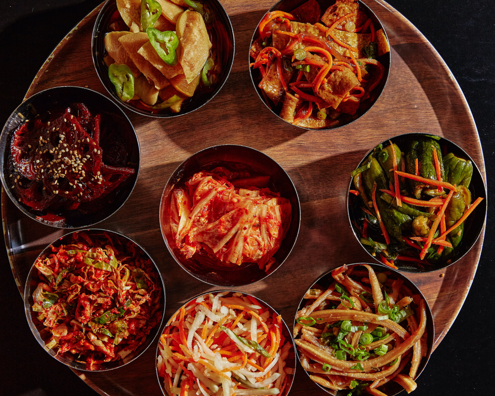
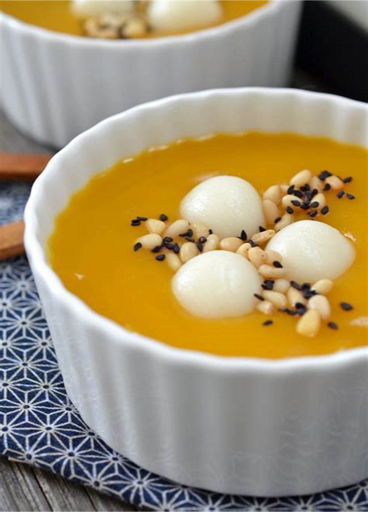
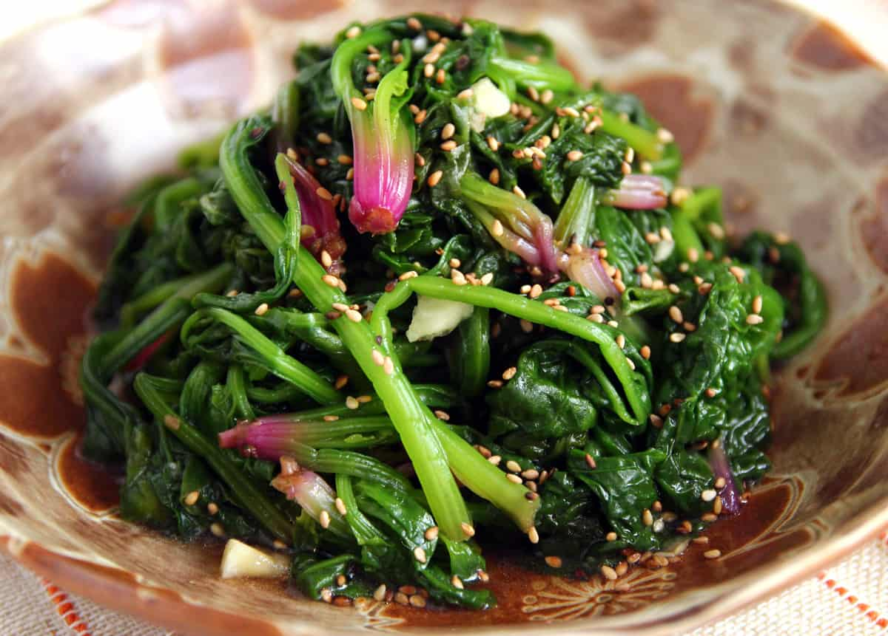
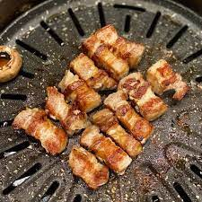
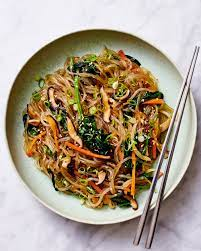
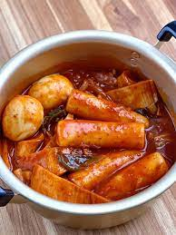
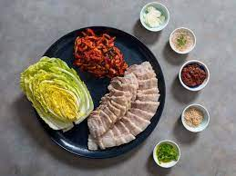

A type of rice porridge, often served with various toppings such as pickled vegetables, shredded meat, and a drizzle of sesame oil.
Kimchi Bokkeumbap $20
Fried rice with kimchi, vegetables, and sometimes meat. It's a great way to use leftover rice.
Gyeran Mari $45
Korean rolled omelet, typically made with beaten eggs mixed with vegetables, and sometimes minced meat, rolled into a log shape and sliced.

Banchan $24
While banchan are typically side dishes served with meals, some of them can be part of a breakfast spread. Examples include kimchi, pickled vegetables, and small portions of stir-fried dishes.

Hobakjuk$24
Pumpkin porridge, made with sweet pumpkin, glutinous rice, and sometimes sweetened with honey.

Namul $20
Steamed or stir-fried vegetables seasoned with sesame oil, soy sauce, garlic, and other seasonings. They can be a part of a balanced breakfast.
Kongbiji Jjigae $45
A stew made with ground soybeans, often served with vegetables, tofu, and sometimes pork.
Bibimbap $24
While more commonly eaten for lunch or dinner, bibimbap (mixed rice with vegetables, meat, and gochujang - red chili paste) can also be enjoyed in the morning.

Samgyeopsal $35
Grilled pork belly slices usually served with garlic, green onions, ssamjang (a thick, spicy paste), and lettuce leaves for wrapping..

Japchae$20
Stir-fried glass noodles made from sweet potato starch, mixed with vegetables, mushrooms, and sometimes beef.
Dolsot Bibimbap $15
Similar to regular bibimbap, but served in a hot stone pot (dolsot), creating a crispy layer of rice at the bottom.
Doenjang Jjigae $24
A fermented soybean paste stew with tofu, vegetables, and sometimes meat or seafood.

Tteokbokki $24
Spicy and sweet rice cakes stir-fried with gochujang sauce, fish cakes, and occasionally boiled eggs.
Haemul Pajeon $20
Seafood and green onion pancake, often enjoyed as a savory and satisfying lunch option.
Kimbap $45
Seaweed-wrapped rice rolls filled with vegetables, pickled radish, and various proteins like tuna or bulgogi.
Sundubu Jjigae $24
A hot and spicy stew made with uncurdled tofu, vegetables, sometimes meat, and gochujang or gochugaru (red chili powder).
Samgyeopsal $24
Grilled pork belly slices usually served with garlic, green onions, ssamjang, and lettuce leaves for wrapping.
Dak Galbi $20
Spicy stir-fried chicken with vegetables and often sweet potato noodles.
Kimchi Fried Rice $45
Fried rice made with kimchi, vegetables, and sometimes meat or seafood.
Haemul Pajeon $24
Seafood and green onion pancake, a popular and savory option for dinner.

Bossam $24
Boiled pork belly slices served with a variety of condiments and wrapped in lettuce leaves.
Yukgaejang $20
Spicy beef soup with shredded beef, vegetables, and noodles.
Jeyuk Bokkeum $45
Spicy stir-fried pork with gochujang, garlic, ginger, and vegetables.
Korean BBQ $24
Grilled meats, such as beef, pork, or chicken, cooked at the table. The grilled meat is often accompanied by various side dishes and dipping sauces.